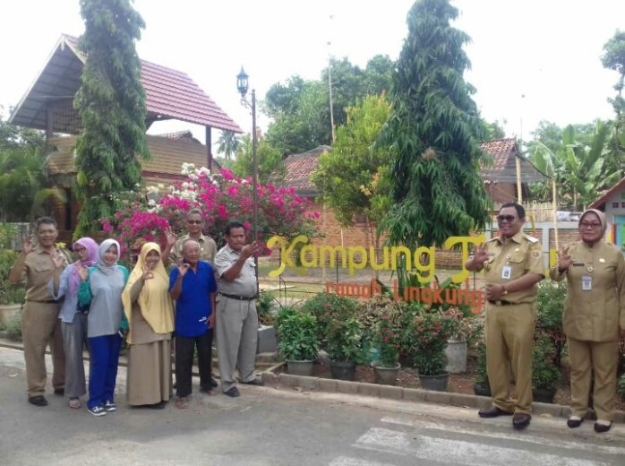
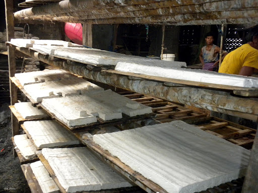
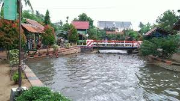
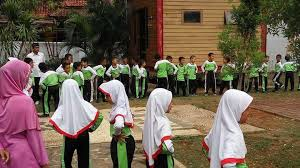

Kampung Tahu

Awal mula berdiri Kampung Tahu Bablan Lor adanya gagasan oleh Badan Keswadayaan Masyarakat (BKM) Margo Mulyo Desa Babalan Lor tahun 2007 silam. “Dulu tahun 2013 kami mendapat penawaran PLBK yaitu Penataan Lingkungan Permukiman Berbasis Komunitas, kami ajukan dan alhamdulillah lolos kemudian mendapat bantuan dana sebesar 1 Milyar,dan kemudian dibangun lah sarana dan prasarana kampung tahu ini.
Pengelolaan Tahu

Indukstri pembuatan tahu di desa Babalanlor sangatlah banyak, terutama yang berada dekat dengan sungai, dari banyaknya industri itulah akhirnya tercetus nama kampung tahu sebagai kampung penghasil tahu.
Wisata Edukasi

Wisata Edukasi di kampung tahu sekarang ini mulai banyak di gemari oleh masyarakat terutama di kalangan pendidikan tingkat kanak-kanak. karena di kampung tahu ini anak-anak akan di perkenalkan dari cara menjaga lingkungan yang bersih, cara mengolah tahu, dan cara membuat makanan olahan dengan bahan dasar tahu. Di wisata edukasi anak-anak juga akan di agak untuk menikmati mainan air berupa bebek ayuh di sekitar kali kampung tahu.
Taman Baca

di kampung tahu Babalanlor terdapat juga taman baca yang setiap hari bisa di kunjungi oleh masyarakat yang ingin membaca. di sini terdapat satu gedung yang di jadikan semacam perpustakaan desa yang bisa di kunjungi oleh masyarakat